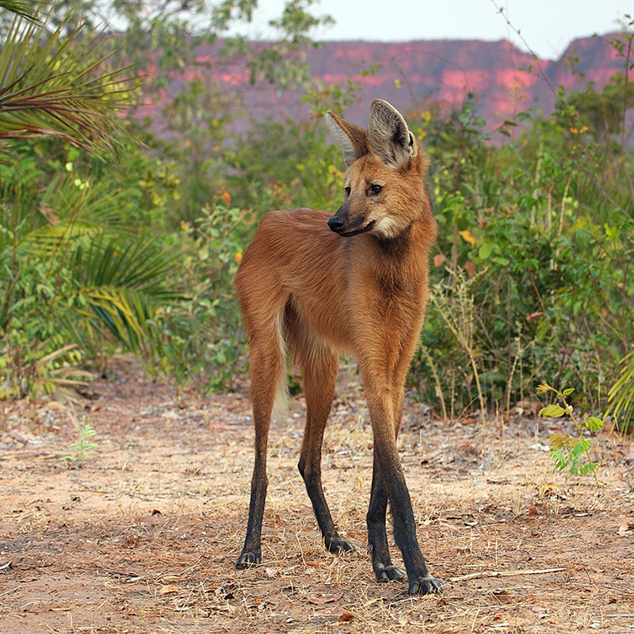

-

Amazonian Royal Flycatcher
Can be found in the forests and woodlands of the amazon [...]
-
Babirusa
Interesting fact about this animal is that its tusks [...]
-
Dhole
Mostly found in southeast asia , the dhole is a very [...]
-

Fossa
a cat-like carnivorous mammal that can be found in [...]
-
Gerenuk
AKA the Waller's gazelle is a long-necked animal of [...]
-

Maned Wolf
The largest canid in south america , looks like a large [...]
-

Pink Fairy Armadillo
is 3.5 to 4.5 inches long, his color is pale pink and [...]
-
Southern Red Muntjac
Can be found in south asia , its fur is soft in greyish [...]